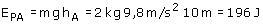

Nota Como los puntos A, B están muy cerca de la superficie terrestre se puede considerar que el campo gravitatorio es constante y conviene tomar como origen de potencial la superficie del planeta a)  Cuando el objeto se desplace desde A hasta la superficie el campo gravitatorio realizará un trabajo de 196 J. Resulta un trabajo positivo porque la fuerza ayuda al desplazamiento (El planeta atrae al objeto y este se acerca al centro) |